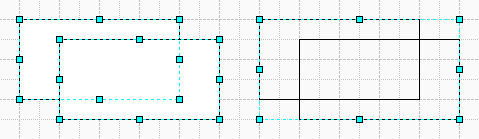
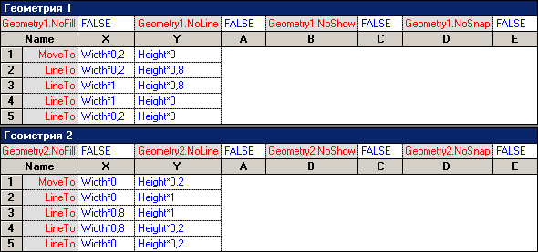
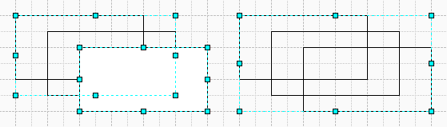
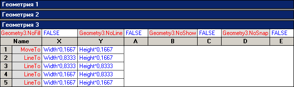
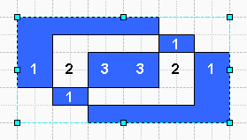
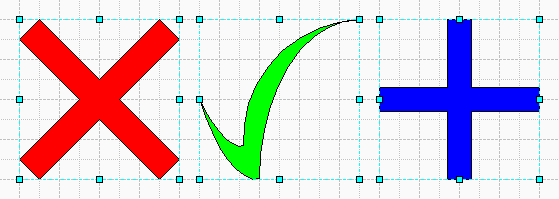
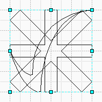
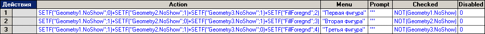
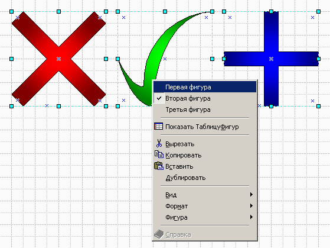

Создание мультифигур в Visio.
 В составе фигур Visio есть фигуры которые выполняют роль составной фигуры, т.е. фигура, состоящая из нескольких фигур и только одна из этих всех фигур в данный момент отображается. Таких фигур много и представляют они многослойную фигуру, у которой один из слоев видимый или иными словами мультифигуру.
В составе фигур Visio есть фигуры которые выполняют роль составной фигуры, т.е. фигура, состоящая из нескольких фигур и только одна из этих всех фигур в данный момент отображается. Таких фигур много и представляют они многослойную фигуру, у которой один из слоев видимый или иными словами мультифигуру.
Как же происходит процесс создания таких фигур? Для того, чтобы ответить на этот вопрос необходимо более подробно рассмотреть процесс присоединения фигур.
Создадим 2 прямоугольника и применим команду присоединение.

Теперь зайдем в ТаблицуФигур новой фигуры. У данной фигуры теперь 2 раздела Геометрия.

Теперь создадим 3-й прямоугольник и применим команду присоединение.

У данной фигуры стало 3 раздела Геометрия.

Теперь если поставить 1 в ячейку Geometry2.NoShow и Geometry3.NoShow, то будет видна только 1-я фигура. Соответственно в остальных случаях будет показана только та фигура у которой в ячейке GeometryN.NoShow стоит 0.
Можно поставить 0 и в две, и в три фигуры, но тогда будет сложно предсказать наличие заливки у пересекающихся поверхностей, т.к. они будут заливаться по “нечетному” правилу.

Одинарный слой подвержен заливке, двойной слой нет (перекрытие), тройной подвержен, четверной нет и т.д.
Какие же фигуры можно включать в состав мультифигуры? Такие фигуры обладают рядом существенных ограничений, таких как:
- использование монотонных фигур, т.е. невозможность использовать более 2 цветов, с учетом градиентной заливки стандартными средствами;
- использование простых фигур;
- использование замкнутых фигур;
- сложность комбинирования простых фигур в составе мультифигуры;
- использование фигур равного размера.
И все же несмотря на достаточно многие ограничения, такие фигуры очень применимы и имеют свои преимущества. Их можно полностью редактировать, причем все сразу, у них одни и те же соединительные точки. Ими, к примеру, легко манипулировать и менять один слой (тип ч.-л.) на другой (тип ч.-л.) одним выбором в меню. Именно так и меняется выбор типа розетки в чертежах планировки помещений.
Теперь создадим полнофункциональную мультифигуру.
Для этого нарисуем 3 фигуры

И сделаем присоединение.

Примечание: при присоединении следующих фигур, все фигуры из состава мультифигуры должны быть видимыми. Иначе у конечной фигуры будет всего 2 слоя, последний видимый и новый.
Далее добавим раздел Действия и внесем изменения в раздел Action.

В первую ячейку Action:
=SETF("Geometry1.NoShow";0)+SETF("Geometry2.NoShow";1)+SETF("Geometry3.NoShow";1)+SETF("FillForegnd";2)
Во вторую ячейку Action:
=SETF("Geometry1.NoShow";1)+SETF("Geometry2.NoShow";0)+SETF("Geometry3.NoShow";1)+SETF("FillForegnd";3)
В третью ячейку Action:
=SETF("Geometry1.NoShow";1)+SETF("Geometry2.NoShow";1)+SETF("Geometry3.NoShow";0)+SETF("FillForegnd";4)
После этого уже можно с данной мультифигурой нормально работать. Вот окончательный вариант получившейся фигуры.

Таким же образом можно составить мультигруппу и отключать части групп.
Примеры из статьи.
В начало раздела
Предыдущая статья
Следующая статья
Автор: Ничков Алексей (a.k.a. Digitall)